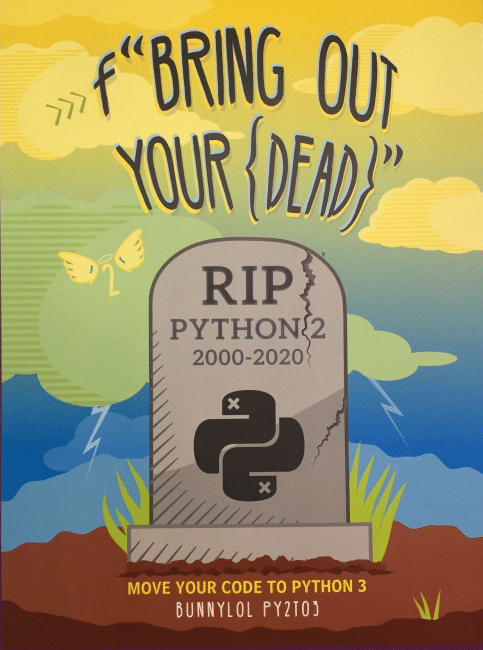

Organizing a Python Project
Antoine Prouvost
Gerad, Feb 20th 2020
Antoine Prouvost
Gerad, Feb 20th 2020
Reminders
RIP Python 2
Use Git for version Control
Python for scripting
Python for scripting
#!/usr/bin/env python
import sys
count = 0
for line in sys.stdin:
count += len(line.split())
print(count)
Python for scripting
echo "Hello world!" | python word_counter.py
2
echo "Hello world!" | wc -w
2
With multiple files
counter/
├── counter.py
├── word_counter.py
└── line_counter.py
Like this?
#!/usr/bin/env python
import word_counter
Or this?
#!/usr/bin/env python
import .word_counter Maybe this?
#!/usr/bin/env python
from . import word_counter
Just need this?
#!/usr/bin/env python
import sys
# FIXME: is this current dir or dir of current file?
sys.path.append(".")
import word_counter
That will do?
#!/usr/bin/env python
import sys
sys.path.append(__file__)
import word_counter
With an __init__.py?
counter/
├── __init__.py
├── counter.py
├── word_counter.py
└── line_counter.py
God Dammit!
Why does this work?
ipython
Python 3.7.5 (default, Oct 25 2019, 10:52:18)
In [1]:
python -m IPython
Python 3.7.5 (default, Oct 25 2019, 10:52:18)
In [1]:
pip show ipython
Name: ipython
Version: 7.12.0
Summary: IPython: Productive Interactive Computing
Location: .../miniconda3/lib/python3.7/site-packages
...
Python Packaging
What's a package?
A collection of
- programs & libraries (eventually binary/compiled);
- metadata (version, origin, author, license... );
- other assets (data files...)
that is
- relocable (in particular downloadable);
- self-contained; Contains all of the source, but the package could require third party dependencies, best handled by the package manager.
- directly usable. If the package needs installation, as for source-packages, this is handled by the package-manager.
PyPA (Python Package Authority), is the reference on packaging.
For example, the packages
are all available on PyPI (Python Package Index).
This is what yout get with pip install (by default).
Baby's first package
counter-project/
├── counter/
│ ├── __init__.py
│ ├── word_counter.py
│ └── line_counter.py
├── setup.py
├── README.md
├── LICENSE
└── .gitignore
setup.py
from setuptools import setup, find_packages
setup(
name="counter", # Name shown in Pip
version="0.1.0",
packages=find_packages(), # Name of module
author="Václav Chvátal",
install_requires=["numpy"], # Resolved by Pip
... # More information
)
Congratulations!
Installing
pip install counter-project/
python -m pip install counter-project/
pip install git+https://github.com/Chvatal/counter-project
Making a package does not mean you have to upload it to PyPI.
Using the package
You can use absolute import anywhere (inside the package code, in a script, test, jupyter...)
import counter.line_counter
You can only use relative import inside the package (e.g. in
word_counter).
from . import line_counter
Never hack sys.path ever again.
What is happening?
pwd
/home/chvatal/counter-project
ls
counter/ setup.py README.md LICENSE
pip install .
...
vim counter/word_counter.py
...
ipython
In [1]: import counter.word_counter
In [2]:
What is happening?
The module imported is the local file, not the installed package!
Packages are self-contained. Pip made a copy of the counter project code.
Local files have higher priority. The module is imported in a local fashion (no package as in the scripting example).
Solutions
-
Synchronize package and source code using editable installs.
pip install --editable counter-project/ -
Disable local import altogether with the
srclayout. Optional, but recommended for more complex project (e.g. compiled extension).
The src layout
The src layout is
debated
Is it overkill?
Probably for simple projects.
But for more complex setup.py, it gets relevant to always use the
package.
Is it hard?
Litterally two lines.
Changes
counter-project/
├── src/
│ └── counter/
│ ├── __init__.py
│ ├── word_counter.py
│ └── line_counter.py
├── setup.py
├── README.md
├── LICENSE
└── .gitignore
from setuptools import setup, find_packages
setup(
packages=find_packages(where="src"),
package_dir={"": "src"},
...
)
Testing
counter-project/
├── src/
│ └── counter/
│ ├── __init__.py
│ ├── word_counter.py
│ └── line_counter.py
├── test/
│ └── test_word_counter.py
├── setup.py
├── README.md
├── LICENSE
└── .gitignore
Test can be executables, or part of a testing framework (std testing,
PyTest).
import counter.word_counter
import numpy
Standalone test
from counter.word_counter import WordCounter
def test_WordCounter_default():
counter = WordCounter()
assert counter("Hello world!\n I am alive!") == 5
if __name__ == "__main__":
test_WordCounter_default()
python test/test_word_counter.py
Meet PyTest
A test runner
- Collect test,
- filter (based on name, files...),
- report on the test results,
- launch debugger on errors...
Meet PyTest
A test framework, with utility and cutomization
- Test for exceptions,
- Parametrize test (run with different input data),
- Easily reuse complex objects,
- [custom] Mark test as slow to not run them by default (great for testing algos),
- [plugin] Test timeouts (great for test that may deadlock)...
PyTest is easy
PyTest collects all test as functions starting with test_ in all
python files starting with test_.
Use assert to test for anything.
PyTest Example
from counter.word_counter import WordCounter
def test_WordCounter_default():
counter = WordCounter()
assert counter("Hello world!\n I am alive!") == 5
python -m pytest test/
Advanced: Mocking
Create fake objects that imitates a class, and record its own usage
- Replace complex object with simple ones,
- Remove dependencies between tests,
- Test directly for object usage (funcion calls and parameters), not their side effects.
Available in standard lib
unitest.mock
Mocking idea
Complex optimization algorithms with auxillary function for gradient descent step (also user implemented).
Failure in the gradient update leads to errors in the overall algorithm (integration test).
Mocking the gradient update, we can test the algorithm independently (unit test).
Executables
Using scripts
counter-project/
├── src/counter/...
├── test/...
├── script/
│ └── word-counter
├── setup.py
├── README.md
├── LICENSE
└── .gitignore
word-counter script
#!/usr/bin/env python
import argparse
import sys
from counter.word_counter import WordCounter
# Some command line arguments parsing ...
counter = WordCounter()
print(counter(sys.stdin.read()))
Shipping with the package
Scripts are only visible locally from the source directory.
Add them to the package with:
from setuptools import setup, find_packages
setup(
packages=find_packages(where="src"),
package_dir={"": "src"},
scripts=["script/word-counter"],
...
)
Usage
Anywhere the package is installed, you can run
echo "Hello word!" | word-counter
Executable Modules
In the package src/counter/word_counter.py
...
def main():
import argparse
import sys
# Some command line arguments parsing ...
counter = WordCounter()
print(counter(sys.stdin.read()))
if __name__ == "__main__":
main()
Usage
Anywhere the package is installed, you can run
echo "Hello word!" | python -m counter.word_counter
Or alias a script
from setuptools import setup, find_packages
setup(
packages=find_packages(where="src"),
package_dir={"": "src"},
entry_points = {
"console_scripts": [
"word-counter=counter.word_counter:main"
],
}
...
)
Usage
Anywhere the package is installed, you can run
echo "Hello word!" | word-counter
Pros and Cons
- Modules don't pollute the shell with executables;
- Modules don't have name conflicts;
- Executalble scripts might get lost in in different environments;
sciptsoption can ship non python scripts.
Idea
Use executable modules for package executable, and keep thescript
directory for developpement scripts.
Bonus: Click
If you feel clumsy usingArgParse
check out
Click.
Research Code
Library or Application?
- Library
- Modular code components intended to be reused (e.g. NumPy).
- Application
-
Codebase with no focus other than its own execution (e.g. Jupyter,
grep, a website).
What is Research Code?
- Some researchers write great libraries (e.g. PyTorch, Scip);
- Some researchers provide their code as-is without focus on reusability.
Both are fine!
Motivation for Modular Research
- All libraries don't need to be collosal, simplicity is key;
- You have no obligation to provide support;
- Copy-to-extend is arduous;
- Easy access to code moves the field forward;
- Easy access to code makes research influencial;
Framework for Modular Research
Write modular algorithms in the package
- Machine learning models;
- Optimization procedures;
- Complete algorithms.
As configurable as possible.
No experiment definitions
Do not impose any choice, e.g. no filenames or config reading.
Framework for Modular Research
Write experiements as scripts
- All hyperparameters used;
- Read files, and configs;
- Save and analyse resuts.
Use an experiment/ folder for experiment scripts.
Compiled Extensions
What's an extension?
CPython is the most
popular implemntation of the Python interpreter, and is written in C.
Everything that can be done in Python, can be done in C through the
library.
In particular, it is possible to create a Python function that runs arbitrary
C code.
Adding Extension to Packages
from setuptools import setup, find_packages, Extension
ext = Extension(
name="counter.fast_word_counter",
... # More compiling options
)
setup(
packages=find_packages(where="src"),
package_dir={"": "src"},
ext_modules=[ext],
...
)
Need to reinstall everytime the extension is recompiled (not editable for that part).
Extension Options
ext = Extension(
name="counter.fast_word_counter",
language="c++",
sources=..., # Files to compile
include_dirs=..., # -I
library_dirs=..., # -L
runtime_library_dirs=..., # -R
libraries=..., # -l
define_macros=..., # -D
...
)
Python libraries are added automatically.
Cython Extension
Cython makes it easy to write compiled extensions without knowing the CPython API.
.pyx and .pxd can be added directy to
Extension sources and include_dirs directly.
cythonize will be called automatically.
However, Cython needs to be installed.
Build Time Dependencies
Cython is required to build (compile) the extension but not to run it.
from setuptools import setup, find_packages, Extension
ext = Extension(
name="counter.fast_word_counter",
... # More compiling options
)
setup(
packages=find_packages(where="src"),
package_dir={"": "src"},
ext_modules=[ext],
setup_requires=["cython"],
...
)
Live Example
PyBind11 Extension
PyBind11 is much more appropriate than Cython to bind C++ code.
Great for object oriented extensions, and modern C++ (e.g. smart pointers).
Dependencies

Library Dependencies
General, should be as wide as supported.
from setuptools import setup, find_packages
setup(
packages=find_packages(where="src"),
package_dir={"": "src"},
install_requires=["numpy", "scipy>=1.2"]
...
)
Pip will install the dependencies and their recursive dependencies.
Application Dependencies
Should be as precise as possible (locked) for full reproducability.
Packages API change between versions.
Locking dependencies is complicated. Multiple solutions exists.
pip freeze
pip freeze
numpy==1.18.1
scipy==1.4.1
pip freeze > requirements.txt
pip install -r requirements.txt
...
pip freeze
- Cumbersome to manage and upgrade
- Not perfect locking;
- Does not lock non-python dependencies
Use Virtual Environments
Isolated Python installations.
Each with installed packages.
Disposable if a dependency file (e.g. requirements.txt) is kept
along.
Minimal, avoid versions conflicts.
Ideal to install locked dependencies.
Ideally one per project.
Use Virtual Environments
python -m venv counter-venv/
source counter-venv/bin/activate
which pip
counter-venv/bin/pip
pip install .
...
Proper locking
Pipenv is a tool to combine
virtual environments and pip, with stronger locking mechnisms.
Unfortunately the future of the project is uncertain
Library Dependencies & Locking
Dependencies can be stated in setup.py and additionally locked
(frozen) for experiment reproducability.
Having both general and locked dependencies makes it easier to manage & upgrade.
Live Example
Non-Python Dependencies
Example
Lot of libraries depends on external libraries (e.g. C).
- NumPy: Blas, Lapack, ...
- PyTorch: Blas, Cuda, ...
On PyPI (pip), developers do their best to package them.
Conda
Conda is a general purpose package manager (Python, JavaScript, C/C++, general Linux tooling).
Anaconda is Conda with lots of pre-downloaded packages.
Conda-Forge is a Conda channel with lot of open-source projects.
Things you find on Conda
- Python packages;
- C/C++/Fortran libraries;
- Python;
- Julia, R;
- Git, CMake, Make, wget, curl, ...
Motivation
- You can choose your Python version
- You can get better performances with
conda. -
You get better reproducability:
- Conda resolver is the exact (solves a SAT problem);
- More of your transitive dependencies will be resolved inside Conda.
Listing Conda Dependencies
name: environment_name
channels:
- conda-forge
- pytorch
dependencies:
- python=3.8
- numpy
Usage
conda env create --file environment_name.yml
Or for an already exsiting environment
conda env update --file environment.yml
Locking Dependencies
conda list > environment_name.txt
Or stronger (OS dependant)
conda list > environment_name.txt
Usage
conda create --name environment_name --file environment_name.txt
Or for an already exsiting environment
conda install --name environment_name --file environment_name.txt
Creating Conda package
Is more complicated, and outside the scope of this tutorial.
Containers
"Light virtual machines"
OS-level reproducability
E.g. Docker and Singularity.
"If all you have is a hammer, everything looks like a nail"
Other Niceties
Debugger without IDE
Static Analysis
Using type hints Mypy can detect inconsistencies without running the code.
Code formatting
Black is the uncompromising Python code formatter.